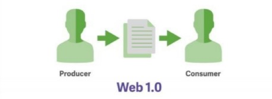

1990
Tim Berners crea el primer servidor de Internet.
Surgimiento de la Web 1.0. Forma más básica que existe de solo texto bastante rápidos.
Ofrece aplicaciones solo para lectura. El usuario no puede interactuar con el contenido
de la página, estando totalmente limitado a lo que el Webmaster sube a ésta.

1995
El añoo en que se comercializa Internet. Microsoft lanza Internet Explorer y Netscape
desarrolla los SSI, que permiten transacciones financieras seguras.

Surge JavaScript. Es un lenguaje de programación interpretado, dialecto del estándar ECMAScript.
1996
Se registran 100,00 sitios en Internet aunque eran estáticos.
Aparece RDF. Es una familia de especificaciones del World Wide Web Consortium (W3C)
diseñado originalmente como un modelo de datos de metadatos.